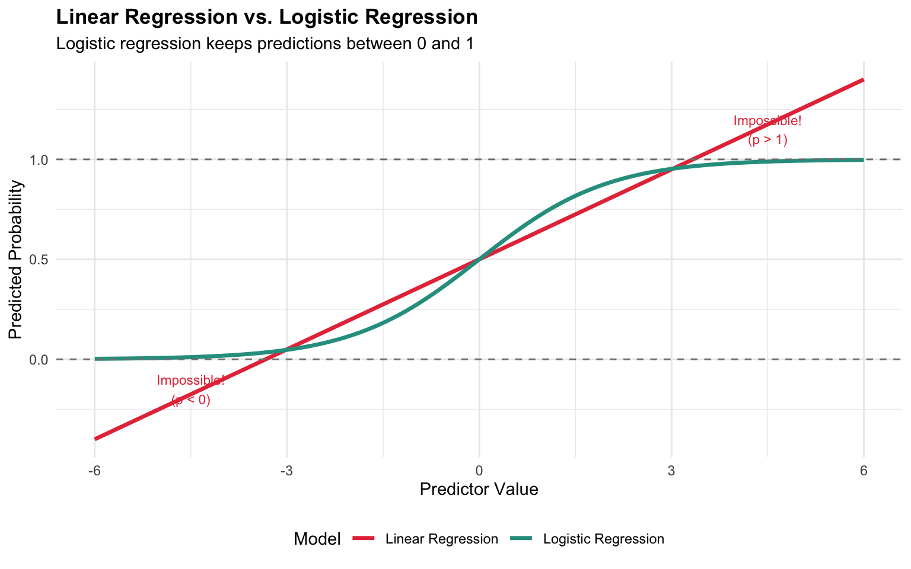
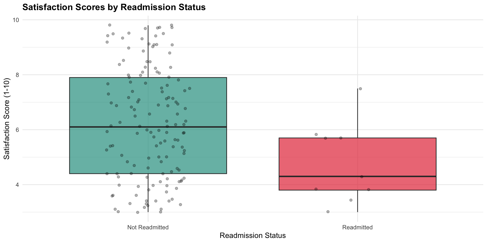
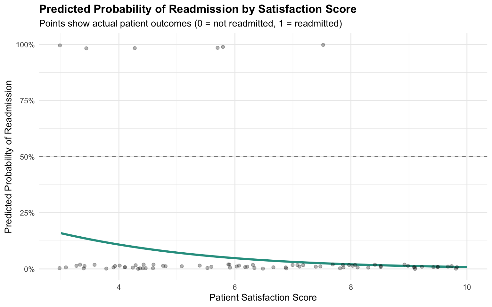

Logistic Regression in Healthcare Management
MBA642: Business Analytics in Healthcare Management
Introduction to Logistic Regression
Why Logistic Regression Matters in Healthcare
In healthcare management, many of the most critical decisions involve predicting binary outcomes—events that either happen or don’t happen. Will a patient be readmitted within 30 days? Will a patient adhere to their medication regimen? Will a treatment be successful? These yes/no questions are fundamentally different from predicting continuous outcomes like blood pressure or length of stay.
Consider this scenario: A hospital administrator wants to identify patients at high risk of readmission so that care coordinators can provide additional support before discharge. The outcome variable—readmission—can only take two values: yes (the patient was readmitted) or no (the patient was not readmitted). We cannot use regular linear regression for this problem because linear regression is designed to predict continuous outcomes that can take any value.
Logistic regression is the appropriate statistical technique when your outcome variable is binary. It allows us to:
- Predict the probability that an event will occur
- Identify which factors increase or decrease the likelihood of the outcome
- Quantify the strength of each predictor’s effect using odds ratios
- Make data-driven decisions about resource allocation and interventions
The Problem with Linear Regression for Binary Outcomes
You might wonder: why can’t we just use linear regression to predict a binary outcome coded as 0 and 1? Let’s understand why this approach fails.
Imagine we want to predict whether a patient will be readmitted (coded as 1) or not (coded as 0) based on their satisfaction score. If we use linear regression, we might get an equation like:
\[P(\text{Readmission}) = 0.8 - 0.1 \times \text{Satisfaction}\]
This seems reasonable at first, but there’s a fundamental problem. What happens when a patient has a very high satisfaction score of 10?
\[P(\text{Readmission}) = 0.8 - 0.1 \times 10 = -0.2\]
We get a negative probability! But probabilities must be between 0 and 1. Similarly, for patients with very low satisfaction, we could get probabilities greater than 1. This is nonsensical—you cannot have a -20% chance or a 140% chance of being readmitted.
Linear regression assumes a straight-line relationship that extends infinitely in both directions. But probabilities are bounded between 0 and 1. We need a different approach that respects these boundaries.
The Logistic Solution: An S-Shaped Curve
Logistic regression solves this problem by using a special S-shaped curve (called the logistic or sigmoid function) that naturally stays between 0 and 1. Instead of predicting the probability directly with a straight line, logistic regression:
- Transforms the probability into something called log odds
- Models the log odds as a linear function of the predictors
- Transforms the result back to a probability
This transformation ensures that no matter what values your predictors take, the predicted probability will always be between 0 and 1. The relationship “flattens out” at the extremes, creating the characteristic S-shape.
As you can see in the graph above, the linear regression line (red) extends beyond the valid probability range, while the logistic regression curve (green) smoothly transitions between 0 and 1, approaching but never crossing these boundaries.
Understanding the Core Concepts
Before we dive into running logistic regression analyses, it’s essential to understand three related concepts: probability, odds, and log odds. These transformations are at the heart of how logistic regression works, and understanding them will help you interpret your results correctly.
From Probability to Odds
You’re already familiar with probability—it’s the chance that something will happen, expressed as a number between 0 and 1 (or as a percentage between 0% and 100%). For example, if 30 out of 100 patients are readmitted, the probability of readmission is 0.30 or 30%.
Odds express the same information differently. Instead of comparing the number of events to the total, odds compare the number of events to the number of non-events:
\[\text{Odds} = \frac{p}{1-p} = \frac{\text{Probability of event happening}}{\text{Probability of event not happening}}\]
Using our readmission example: - Probability of readmission = 0.30 - Probability of NOT being readmitted = 0.70 - Odds of readmission = 0.30 / 0.70 = 0.429
This means that for every patient who is readmitted, there are about 2.3 patients who are not readmitted (since 1/0.429 ≈ 2.3). Alternatively, we can say the odds are “0.429 to 1” or roughly “3 to 7” in favor of not being readmitted.
Understanding Odds Values
Here’s a helpful table showing how probability and odds relate to each other:
| Probability (p) | 1 - p | Odds | Interpretation |
|---|---|---|---|
| 0.10 | 0.90 | 0.111 | Very unlikely |
| 0.25 | 0.75 | 0.333 | Unlikely |
| 0.33 | 0.67 | 0.500 | Somewhat unlikely |
| 0.50 | 0.50 | 1.000 | Equal chance (50/50) |
| 0.67 | 0.33 | 2.000 | Somewhat likely |
| 0.75 | 0.25 | 3.000 | Likely |
| 0.90 | 0.10 | 9.000 | Very likely |
Key insight about odds:
- When odds = 1, the event is equally likely to happen or not happen (50/50 chance)
- When odds < 1, the event is less likely than 50/50
- When odds > 1, the event is more likely than 50/50
- Odds can only be positive values (they range from 0 to infinity)
From Odds to Log Odds (Logit)
While odds are more useful than probabilities for our purposes (they range from 0 to infinity instead of 0 to 1), they still have a limitation: they cannot be negative. This asymmetry makes them difficult to model with linear equations.
The solution is to take the natural logarithm of the odds, which gives us the log odds (also called the logit):
\[\text{Log Odds} = \ln(\text{Odds}) = \ln\left(\frac{p}{1-p}\right)\]
This transformation has a beautiful property: log odds can range from negative infinity to positive infinity, making them perfect for linear modeling.
| Probability | Odds | Log Odds (Logit) |
|---|---|---|
| 0.10 | 0.111 | -2.197 |
| 0.25 | 0.333 | -1.099 |
| 0.33 | 0.500 | -0.693 |
| 0.50 | 1.000 | 0.000 |
| 0.67 | 2.000 | 0.693 |
| 0.75 | 3.000 | 1.099 |
| 0.90 | 9.000 | 2.197 |
Key insight about log odds:
- When log odds = 0, the event has a 50/50 chance (probability = 0.5)
- When log odds < 0, the event is less likely than 50/50
- When log odds > 0, the event is more likely than 50/50
- Log odds can be any real number (positive or negative)
The Logistic Regression Equation
Now we can write the logistic regression equation. Instead of predicting probability directly (which would cause the boundary problems we discussed), we predict the log odds:
\[\ln\left(\frac{p}{1-p}\right) = \beta_0 + \beta_1 X_1 + \beta_2 X_2 + \cdots + \beta_k X_k\]
This equation says: “The log odds of the outcome is a linear combination of the predictors.”
The coefficients (\(\beta\) values) in this equation are log odds ratios. They tell us how much the log odds change when the predictor increases by one unit.
Converting Back to Probability
Once we have predicted log odds, we can convert back to probability using these relationships:
- From log odds to odds: \(\text{Odds} = e^{\text{log odds}}\)
- From odds to probability: \(p = \frac{\text{Odds}}{1 + \text{Odds}}\)
Or in one step:
\[p = \frac{e^{\beta_0 + \beta_1 X_1 + \cdots}}{1 + e^{\beta_0 + \beta_1 X_1 + \cdots}}\]
Don’t worry if these formulas seem complex—R will do all these calculations for us. The important thing is to understand the conceptual flow: we model log odds linearly, then transform the results back to probabilities.
Simple Logistic Regression
Simple logistic regression involves predicting a binary outcome using a single predictor variable. This is the foundation for understanding more complex models, so we’ll work through this carefully with a detailed healthcare example.
Scenario: Predicting Hospital Readmission
You are a quality improvement analyst at a regional hospital. Hospital readmissions within 30 days are a major concern because they indicate potential gaps in care quality and result in financial penalties under Medicare’s Hospital Readmissions Reduction Program.
Your hospital has been tracking patient satisfaction scores (measured on a 1-10 scale at discharge) and wants to understand: Does patient satisfaction predict the likelihood of 30-day readmission?
The hypothesis is that patients who are more satisfied with their care may be better prepared for discharge, have better understanding of their follow-up instructions, and therefore be less likely to be readmitted.
You have data from 150 patients who were discharged in the past quarter.
Creating and Exploring the Data
Let’s first create our dataset and explore it to understand what we’re working with:
# Create hospital readmission dataset
n <- 150
# Generate patient satisfaction scores (1-10 scale)
satisfaction <- round(runif(n, min = 3, max = 10), 1)
# Generate readmission outcomes
# Higher satisfaction = lower probability of readmission
log_odds <- -0.8 - 0.35 * satisfaction + rnorm(n, 0, 0.5)
prob_readmit <- exp(log_odds) / (1 + exp(log_odds))
readmitted <- rbinom(n, 1, prob_readmit)
# Create data frame
patient_data <- data.frame(
patient_id = 1:n,
satisfaction = satisfaction,
readmitted = readmitted
)
# View first few rows
head(patient_data, 10) patient_id satisfaction readmitted
1 1 7.9 0
2 2 6.9 0
3 3 4.0 0
4 4 5.0 0
5 5 6.9 0
6 6 3.2 0
7 7 6.3 0
8 8 9.0 0
9 9 4.8 0
10 10 7.1 0Let’s examine our data more closely to understand the distribution of our variables:
# Summary statistics
cat("=== Summary of Patient Satisfaction Scores ===\n")=== Summary of Patient Satisfaction Scores ===cat("Mean satisfaction:", round(mean(patient_data$satisfaction), 2), "\n")Mean satisfaction: 6.17 cat("SD satisfaction:", round(sd(patient_data$satisfaction), 2), "\n")SD satisfaction: 2.01 cat("Range:", min(patient_data$satisfaction), "to", max(patient_data$satisfaction), "\n\n")Range: 3 to 9.8 cat("=== Readmission Outcomes ===\n")=== Readmission Outcomes ===cat("Total patients:", nrow(patient_data), "\n")Total patients: 150 cat("Readmitted:", sum(patient_data$readmitted),
"(", round(100*mean(patient_data$readmitted), 1), "%)\n")Readmitted: 9 ( 6 %)cat("Not readmitted:", sum(patient_data$readmitted == 0),
"(", round(100*mean(patient_data$readmitted == 0), 1), "%)\n")Not readmitted: 141 ( 94 %)Now let’s visualize the relationship between satisfaction and readmission:
# Create visualization
p1 <- ggplot(patient_data, aes(x = factor(readmitted), y = satisfaction,
fill = factor(readmitted))) +
geom_boxplot(alpha = 0.7) +
geom_jitter(width = 0.2, alpha = 0.3) +
scale_fill_manual(values = c("0" = "#2A9D8F", "1" = "#E63946"),
labels = c("Not Readmitted", "Readmitted")) +
scale_x_discrete(labels = c("Not Readmitted", "Readmitted")) +
labs(title = "Satisfaction Scores by Readmission Status",
x = "Readmission Status",
y = "Satisfaction Score (1-10)") +
theme_minimal() +
theme(legend.position = "none",
plot.title = element_text(face = "bold"))
p1
Looking at this boxplot, we can see that patients who were readmitted tend to have lower satisfaction scores than those who were not readmitted. This suggests there may be a relationship worth investigating with logistic regression.
Running the Logistic Regression
In R, we use the glm() function (generalized linear model) with family = binomial to run logistic regression. The syntax is similar to linear regression with lm():
# Fit logistic regression model
model_simple <- glm(readmitted ~ satisfaction,
data = patient_data,
family = binomial)
# View the results
summary(model_simple)
Call:
glm(formula = readmitted ~ satisfaction, family = binomial, data = patient_data)
Coefficients:
Estimate Std. Error z value Pr(>|z|)
(Intercept) -0.3399 1.1148 -0.305 0.760
satisfaction -0.4416 0.2182 -2.024 0.043 *
---
Signif. codes: 0 '***' 0.001 '**' 0.01 '*' 0.05 '.' 0.1 ' ' 1
(Dispersion parameter for binomial family taken to be 1)
Null deviance: 68.090 on 149 degrees of freedom
Residual deviance: 62.999 on 148 degrees of freedom
AIC: 66.999
Number of Fisher Scoring iterations: 6Interpreting the Results Step by Step
The output contains a lot of information. Let’s work through it piece by piece to understand what it all means.
Step 1: Understanding the Coefficients Table
The most important part of the output is the “Coefficients” table. Let’s extract and examine it:
# Extract coefficients
coef_table <- summary(model_simple)$coefficients
kable(coef_table, digits = 4)| Estimate | Std. Error | z value | Pr(>|z|) | |
|---|---|---|---|---|
| (Intercept) | -0.3399 | 1.1148 | -0.3049 | 0.7605 |
| satisfaction | -0.4416 | 0.2182 | -2.0240 | 0.0430 |
Each row in this table represents one term in our model:
(Intercept): This is \(\beta_0\), the predicted log odds when satisfaction = 0satisfaction: This is \(\beta_1\), the change in log odds for each one-unit increase in satisfaction
The columns tell us:
- Estimate: The coefficient value (log odds ratio)
- Std. Error: The uncertainty in our estimate
- z value: The test statistic (Estimate / Std. Error)
- Pr(>|z|): The p-value for testing whether the coefficient differs from zero
Step 2: Writing the Model Equation
From our output, we can write the logistic regression equation:
Log Odds of Readmission = -0.34 + (-0.442) × SatisfactionThis equation tells us: for each one-unit increase in satisfaction score, the log odds of readmission changes by the coefficient value.
Step 3: Interpreting the Log Odds Ratio
The coefficient for satisfaction is our log odds ratio. Let’s interpret it:
Log Odds Ratio for Satisfaction: -0.4416 Interpretation:1. DIRECTION: The coefficient is NEGATIVE, which means higher satisfaction
is associated with LOWER log odds of readmission.2. STATISTICAL SIGNIFICANCE: The p-value is 0.043 Since p < 0.05, this relationship is statistically significant.3. MAGNITUDE: For each one-unit increase in satisfaction score, the log odds of readmission change by -0.442 Step 4: Converting to Odds Ratio
While log odds ratios are mathematically convenient, odds ratios are much easier to interpret. We convert by exponentiating:
\[\text{Odds Ratio} = e^{\text{Log Odds Ratio}}\]
# Calculate odds ratios
odds_ratios <- exp(coef(model_simple))
cat("Odds Ratios:\n")Odds Ratios:cat("Intercept:", round(odds_ratios[1], 4), "\n")Intercept: 0.7118 cat("Satisfaction:", round(odds_ratios[2], 4), "\n")Satisfaction: 0.643 Let’s interpret the odds ratio for satisfaction:
Odds Ratio for Satisfaction: 0.643 Interpretation:Since the odds ratio is LESS than 1, higher satisfaction is associated
with LOWER odds of readmission.
Specifically: For each one-unit increase in satisfaction score,
the odds of readmission DECREASE by 35.7 %
Alternatively: The odds of readmission are multiplied by 0.643
for each one-unit increase in satisfaction.Step 5: Confidence Intervals for Odds Ratios
To understand the precision of our odds ratio estimate, we should examine confidence intervals:
# Calculate 95% confidence intervals for odds ratios
ci <- exp(confint(model_simple))
cat("95% Confidence Intervals for Odds Ratios:\n\n")95% Confidence Intervals for Odds Ratios:print(round(ci, 4)) 2.5 % 97.5 %
(Intercept) 0.0792 6.8654
satisfaction 0.3944 0.9476
Interpretation of CI for Satisfaction:We are 95% confident that the true odds ratio lies between 0.394 and 0.948 Since the entire confidence interval is below 1, we can be confident
that higher satisfaction is associated with lower odds of readmission.Predicting Probabilities
One of the most useful applications of logistic regression is predicting the probability of the outcome for specific values of the predictor. Let’s calculate predicted probabilities step by step.
Manual Calculation
Let’s predict the probability of readmission for a patient with a satisfaction score of 5:
# Get coefficients
b0 <- coef(model_simple)[1]
b1 <- coef(model_simple)[2]
# For satisfaction = 5
sat_value <- 5
# Step 1: Calculate log odds
log_odds <- b0 + b1 * sat_value
cat("Step 1 - Log Odds:\n")Step 1 - Log Odds:cat("Log odds =", round(b0, 3), "+ (", round(b1, 3), ") ×", sat_value, "\n")Log odds = -0.34 + ( -0.442 ) × 5 cat("Log odds =", round(log_odds, 4), "\n\n")Log odds = -2.548 # Step 2: Convert to odds
odds <- exp(log_odds)
cat("Step 2 - Odds:\n")Step 2 - Odds:cat("Odds = e^(", round(log_odds, 4), ") =", round(odds, 4), "\n\n")Odds = e^( -2.548 ) = 0.0782 # Step 3: Convert to probability
prob <- odds / (1 + odds)
cat("Step 3 - Probability:\n")Step 3 - Probability:cat("Probability =", round(odds, 4), "/ (1 +", round(odds, 4), ") =", round(prob, 4), "\n\n")Probability = 0.0782 / (1 + 0.0782 ) = 0.0726 cat("Interpretation: A patient with a satisfaction score of", sat_value,
"has a\n", round(prob * 100, 1), "% predicted probability of being readmitted.\n")Interpretation: A patient with a satisfaction score of 5 has a
7.3 % predicted probability of being readmitted.Using R’s predict() Function
Of course, R can do this calculation for us automatically:
# Create data frame with values to predict
new_patients <- data.frame(
satisfaction = c(4, 5, 6, 7, 8)
)
# Predict probabilities
new_patients$predicted_prob <- predict(model_simple,
newdata = new_patients,
type = "response")
# Display results
cat("Predicted Probabilities of Readmission:\n\n")Predicted Probabilities of Readmission:print(round(new_patients, 3)) satisfaction predicted_prob
1 4 0.108
2 5 0.073
3 6 0.048
4 7 0.031
5 8 0.020Visualizing the Predicted Probabilities
Let’s create a visualization showing how the predicted probability of readmission changes across the range of satisfaction scores:
# Create prediction data across range of satisfaction
pred_data <- data.frame(
satisfaction = seq(3, 10, by = 0.1)
)
pred_data$probability <- predict(model_simple, newdata = pred_data, type = "response")
# Plot
ggplot() +
# Add prediction curve
geom_line(data = pred_data, aes(x = satisfaction, y = probability),
color = "#2A9D8F", linewidth = 1.2) +
# Add actual data points
geom_point(data = patient_data, aes(x = satisfaction, y = readmitted),
alpha = 0.3, position = position_jitter(height = 0.02)) +
# Add reference line at 0.5
geom_hline(yintercept = 0.5, linetype = "dashed", color = "gray50") +
labs(title = "Predicted Probability of Readmission by Satisfaction Score",
subtitle = "Points show actual patient outcomes (0 = not readmitted, 1 = readmitted)",
x = "Patient Satisfaction Score",
y = "Predicted Probability of Readmission") +
scale_y_continuous(limits = c(0, 1), labels = scales::percent) +
theme_minimal() +
theme(plot.title = element_text(face = "bold"))
This S-shaped curve is the hallmark of logistic regression. Notice how:
- At low satisfaction scores, the probability of readmission is high
- At high satisfaction scores, the probability of readmission is low
- The curve is steepest in the middle and flattens at the extremes
Evaluating Model Performance
After fitting a logistic regression model, we want to know: how well does this model actually predict outcomes? A simple way to evaluate this is to compare predicted outcomes with actual outcomes.
Creating a Classification Table
First, we need to convert predicted probabilities into predicted classes. We typically use 0.5 as the cutoff: if predicted probability ≥ 0.5, predict “readmitted”; otherwise, predict “not readmitted”.
# Add predictions to our data
patient_data$predicted_prob <- predict(model_simple, type = "response")
patient_data$predicted_class <- ifelse(patient_data$predicted_prob >= 0.5, 1, 0)
# Create classification table with explicit factor levels to ensure 2x2 table
class_table <- table(
Predicted = factor(patient_data$predicted_class, levels = c(0, 1)),
Actual = factor(patient_data$readmitted, levels = c(0, 1))
)
cat("Classification Table (Confusion Matrix):\n\n")Classification Table (Confusion Matrix):print(class_table) Actual
Predicted 0 1
0 141 9
1 0 0Let’s interpret this table:
Model Performance:Correctly classified: 141 out of 150 patientsOverall accuracy: 94 %Breakdown:- Correctly predicted NOT readmitted: 141 - Correctly predicted readmitted: 0 - Incorrectly predicted readmitted (false alarm): 0 - Incorrectly predicted NOT readmitted (missed): 9 Practice Activities for Simple Logistic Regression
Practice Activity 1: Medication Adherence
A pharmacy wants to understand whether the number of medications a patient takes predicts their adherence to their medication regimen. Adherence is measured as a binary variable (1 = adherent, 0 = non-adherent).
Use the following data to:
- Run a logistic regression predicting adherence from number of medications
- Interpret the log odds ratio and odds ratio
- Calculate the predicted probability of adherence for a patient taking 6 medications
# Medication adherence data
set.seed(123)
n_patients <- 100
num_medications <- round(runif(n_patients, 1, 12))
log_odds_adhere <- 1.5 - 0.2 * num_medications + rnorm(n_patients, 0, 0.5)
prob_adhere <- exp(log_odds_adhere) / (1 + exp(log_odds_adhere))
adherent <- rbinom(n_patients, 1, prob_adhere)
adherence_data <- data.frame(
patient_id = 1:n_patients,
num_medications = num_medications,
adherent = adherent
)
# View the data
head(adherence_data, 10) patient_id num_medications adherent
1 1 4 0
2 2 10 0
3 3 5 0
4 4 11 1
5 5 11 0
6 6 2 1
7 7 7 0
8 8 11 0
9 9 7 1
10 10 6 1Practice Activity 2: Emergency Department Return Visits
An emergency department wants to predict whether patients will return within 72 hours based on their initial pain score (0-10 scale).
Use the following data to:
- Run a logistic regression predicting 72-hour return from pain score
- Create a visualization of predicted probabilities
- Evaluate the model’s classification accuracy
# ED return visit data
set.seed(456)
n_ed <- 120
pain_score <- round(runif(n_ed, 1, 10))
log_odds_return <- -2.5 + 0.35 * pain_score + rnorm(n_ed, 0, 0.6)
prob_return <- exp(log_odds_return) / (1 + exp(log_odds_return))
returned <- rbinom(n_ed, 1, prob_return)
ed_data <- data.frame(
visit_id = 1:n_ed,
pain_score = pain_score,
returned_72hr = returned
)
# View the data
head(ed_data, 10) visit_id pain_score returned_72hr
1 1 2 0
2 2 3 0
3 3 8 1
4 4 9 1
5 5 8 0
6 6 4 1
7 7 2 0
8 8 4 0
9 9 3 1
10 10 4 0Multiple Logistic Regression
In practice, outcomes like hospital readmission are influenced by multiple factors simultaneously. Multiple logistic regression allows us to include several predictors in a single model, which enables us to:
- Control for confounding variables (factors that might distort the relationship we’re studying)
- Compare the relative importance of different predictors
- Make more accurate predictions by incorporating more information
Scenario: Comprehensive Readmission Risk Model
Continuing with our hospital readmission example, the quality improvement team wants to build a more comprehensive model. They believe that readmission risk depends not only on patient satisfaction but also on:
- Patient age (older patients may have more complex health needs)
- Number of comorbidities (patients with multiple chronic conditions may be at higher risk)
- Insurance type (which may reflect access to post-discharge care)
Our goal is to understand how each of these factors contributes to readmission risk while accounting for the others.
Creating the Multiple Predictor Dataset
Let’s create a more comprehensive dataset with multiple predictors:
# Create comprehensive readmission dataset
set.seed(2026)
n <- 200
# Generate predictor variables
satisfaction <- round(runif(n, min = 3, max = 10), 1)
age <- round(rnorm(n, mean = 65, sd = 12))
age <- pmax(pmin(age, 95), 30) # Keep age between 30 and 95
comorbidities <- rpois(n, lambda = 2) # Number of chronic conditions
insurance <- sample(c("Private", "Medicare", "Medicaid"), n,
replace = TRUE, prob = c(0.4, 0.4, 0.2))
# Generate readmission outcomes based on all predictors
# Higher satisfaction = lower risk
# Higher age = higher risk
# More comorbidities = higher risk
# Insurance type affects risk
insurance_effect <- ifelse(insurance == "Private", -0.3,
ifelse(insurance == "Medicare", 0, 0.4))
log_odds <- -2 - 0.3 * satisfaction + 0.02 * age + 0.4 * comorbidities +
insurance_effect + rnorm(n, 0, 0.5)
prob_readmit <- exp(log_odds) / (1 + exp(log_odds))
readmitted <- rbinom(n, 1, prob_readmit)
# Create data frame
readmit_data <- data.frame(
patient_id = 1:n,
satisfaction = satisfaction,
age = age,
comorbidities = comorbidities,
insurance = factor(insurance),
readmitted = readmitted
)
# View first few rows
head(readmit_data, 10) patient_id satisfaction age comorbidities insurance readmitted
1 1 7.9 80 2 Medicaid 1
2 2 6.9 59 2 Medicare 1
3 3 4.0 62 2 Private 0
4 4 5.0 52 3 Private 0
5 5 6.9 77 1 Medicare 0
6 6 3.2 72 1 Medicaid 0
7 7 6.3 46 3 Private 0
8 8 9.0 83 2 Medicaid 0
9 9 4.8 51 1 Medicare 0
10 10 7.1 52 4 Medicaid 0Let’s explore this richer dataset:
# Summary statistics
cat("=== Dataset Overview ===\n")=== Dataset Overview ===cat("Total patients:", nrow(readmit_data), "\n")Total patients: 200 cat("Readmission rate:", round(100 * mean(readmit_data$readmitted), 1), "%\n\n")Readmission rate: 20.5 %cat("=== Continuous Variables ===\n")=== Continuous Variables ===cat("Satisfaction: Mean =", round(mean(readmit_data$satisfaction), 2),
", SD =", round(sd(readmit_data$satisfaction), 2), "\n")Satisfaction: Mean = 6.18 , SD = 2.04 cat("Age: Mean =", round(mean(readmit_data$age), 1),
", SD =", round(sd(readmit_data$age), 1), "\n")Age: Mean = 66.3 , SD = 11 cat("Comorbidities: Mean =", round(mean(readmit_data$comorbidities), 2),
", SD =", round(sd(readmit_data$comorbidities), 2), "\n\n")Comorbidities: Mean = 2 , SD = 1.38 cat("=== Insurance Type Distribution ===\n")=== Insurance Type Distribution ===print(table(readmit_data$insurance))
Medicaid Medicare Private
53 79 68 Running Multiple Logistic Regression
The syntax for multiple logistic regression is straightforward—we simply add more predictors to the formula:
# Fit multiple logistic regression model
model_multiple <- glm(readmitted ~ satisfaction + age + comorbidities + insurance,
data = readmit_data,
family = binomial)
# View the results
summary(model_multiple)
Call:
glm(formula = readmitted ~ satisfaction + age + comorbidities +
insurance, family = binomial, data = readmit_data)
Coefficients:
Estimate Std. Error z value Pr(>|z|)
(Intercept) -1.99819 1.27945 -1.562 0.11835
satisfaction -0.17521 0.09366 -1.871 0.06141 .
age 0.02932 0.01652 1.775 0.07590 .
comorbidities 0.20099 0.13133 1.530 0.12593
insuranceMedicare -0.81321 0.42798 -1.900 0.05742 .
insurancePrivate -1.27177 0.48110 -2.643 0.00821 **
---
Signif. codes: 0 '***' 0.001 '**' 0.01 '*' 0.05 '.' 0.1 ' ' 1
(Dispersion parameter for binomial family taken to be 1)
Null deviance: 202.9 on 199 degrees of freedom
Residual deviance: 188.0 on 194 degrees of freedom
AIC: 200
Number of Fisher Scoring iterations: 4Interpreting Multiple Predictors
With multiple predictors, each coefficient represents the effect of that variable while holding all other variables constant. This is crucial for proper interpretation.
Extracting and Interpreting Coefficients
# Create a nice summary table
coef_summary <- data.frame(
Variable = names(coef(model_multiple)),
`Log Odds Ratio` = round(coef(model_multiple), 4),
`Odds Ratio` = round(exp(coef(model_multiple)), 4),
`p-value` = round(summary(model_multiple)$coefficients[, 4], 4)
)
kable(coef_summary, row.names = FALSE)| Variable | Log.Odds.Ratio | Odds.Ratio | p.value |
|---|---|---|---|
| (Intercept) | -1.9982 | 0.1356 | 0.1183 |
| satisfaction | -0.1752 | 0.8393 | 0.0614 |
| age | 0.0293 | 1.0298 | 0.0759 |
| comorbidities | 0.2010 | 1.2226 | 0.1259 |
| insuranceMedicare | -0.8132 | 0.4434 | 0.0574 |
| insurancePrivate | -1.2718 | 0.2803 | 0.0082 |
Let’s interpret each predictor:
=== Interpretation of Each Predictor ===1. SATISFACTION Log Odds Ratio: -0.175 Odds Ratio: 0.839 p-value: 0.0614 Interpretation: Holding age, comorbidities, and insurance constant,
each one-unit increase in satisfaction is associated with a 16.1 %
DECREASE in the odds of readmission.2. AGE Log Odds Ratio: 0.0293 Odds Ratio: 1.0298 p-value: 0.0759 Interpretation: Holding other variables constant, each one-year
increase in age is associated with a 3 % increase in the
odds of readmission.3. COMORBIDITIES Log Odds Ratio: 0.201 Odds Ratio: 1.223 p-value: 0.1259 Interpretation: Holding other variables constant, each additional
comorbidity is associated with a 22.3 % increase in the odds
of readmission.4. INSURANCE TYPE Reference category: Medicaid Medicare vs. Medicaid: Odds Ratio: 0.443 p-value: 0.0574
Private vs. Medicaid: Odds Ratio: 0.28 p-value: 0.0082 Understanding Categorical Predictors
When you include a categorical variable like insurance type in logistic regression, R automatically creates dummy variables. One category becomes the reference category, and the coefficients for other categories represent comparisons to this reference.
In our model:
- Medicaid is the reference category (it doesn’t appear in the output)
- insuranceMedicare compares Medicare patients to Medicaid patients
- insurancePrivate compares Private insurance patients to Medicaid patients
For example, if the odds ratio for insurancePrivate is 0.5, this means that patients with private insurance have 50% lower odds of readmission compared to patients with Medicaid, holding all other variables constant.
Controlling for Confounders
One of the most important reasons to use multiple regression is to control for confounding variables. A confounder is a variable that is related to both the predictor and the outcome, potentially creating a spurious relationship.
Let’s compare our simple model (satisfaction only) with our multiple model:
# Simple model (for comparison)
model_simple_compare <- glm(readmitted ~ satisfaction,
data = readmit_data,
family = binomial)
# Compare satisfaction coefficients
cat("Effect of Satisfaction on Readmission:\n\n")Effect of Satisfaction on Readmission:cat("Simple Model (satisfaction only):\n")Simple Model (satisfaction only):cat(" Log Odds Ratio:", round(coef(model_simple_compare)["satisfaction"], 4), "\n") Log Odds Ratio: -0.154 cat(" Odds Ratio:", round(exp(coef(model_simple_compare)["satisfaction"]), 4), "\n\n") Odds Ratio: 0.8573 cat("Multiple Model (controlling for age, comorbidities, insurance):\n")Multiple Model (controlling for age, comorbidities, insurance):cat(" Log Odds Ratio:", round(coef(model_multiple)["satisfaction"], 4), "\n") Log Odds Ratio: -0.1752 cat(" Odds Ratio:", round(exp(coef(model_multiple)["satisfaction"]), 4), "\n") Odds Ratio: 0.8393 The difference between these coefficients shows the impact of controlling for confounders. The multiple regression coefficient represents the “pure” effect of satisfaction after removing the influence of age, comorbidities, and insurance type.
Comparing Model Fit
We can compare how well our simple and multiple models fit the data using several metrics:
# Compare AIC (lower is better)
cat("Model Comparison:\n\n")Model Comparison:cat("AIC (Akaike Information Criterion) - lower is better:\n")AIC (Akaike Information Criterion) - lower is better:cat(" Simple model:", round(AIC(model_simple_compare), 2), "\n") Simple model: 203.85 cat(" Multiple model:", round(AIC(model_multiple), 2), "\n\n") Multiple model: 200 # Compare classification accuracy
pred_simple <- ifelse(predict(model_simple_compare, type = "response") >= 0.5, 1, 0)
pred_multiple <- ifelse(predict(model_multiple, type = "response") >= 0.5, 1, 0)
acc_simple <- mean(pred_simple == readmit_data$readmitted)
acc_multiple <- mean(pred_multiple == readmit_data$readmitted)
cat("Classification Accuracy:\n")Classification Accuracy:cat(" Simple model:", round(acc_simple * 100, 1), "%\n") Simple model: 79.5 %cat(" Multiple model:", round(acc_multiple * 100, 1), "%\n") Multiple model: 78 %The multiple model typically has a lower AIC and higher accuracy, indicating that the additional predictors improve our ability to predict readmission.
Making Predictions with Multiple Predictors
Let’s predict readmission probability for specific patient profiles:
# Create patient profiles
patient_profiles <- data.frame(
Profile = c("Low Risk", "Medium Risk", "High Risk"),
satisfaction = c(8, 6, 4),
age = c(50, 65, 80),
comorbidities = c(1, 2, 4),
insurance = factor(c("Private", "Medicare", "Medicaid"),
levels = levels(readmit_data$insurance))
)
# Predict probabilities
patient_profiles$predicted_prob <- predict(model_multiple,
newdata = patient_profiles,
type = "response")
# Display results
cat("Predicted Readmission Probabilities for Different Patient Profiles:\n\n")Predicted Readmission Probabilities for Different Patient Profiles:print(patient_profiles) Profile satisfaction age comorbidities insurance predicted_prob
1 Low Risk 8 50 1 Private 0.04722132
2 Medium Risk 6 65 2 Medicare 0.17440106
3 High Risk 4 80 4 Medicaid 0.61079738This shows how combining multiple risk factors leads to dramatically different predicted probabilities. The “high risk” patient—with low satisfaction, advanced age, multiple comorbidities, and Medicaid insurance—has a much higher predicted probability of readmission than the “low risk” patient.
Evaluating the Multiple Regression Model
Let’s create a classification table for our multiple regression model:
# Add predictions
readmit_data$pred_prob_multiple <- predict(model_multiple, type = "response")
readmit_data$pred_class_multiple <- ifelse(readmit_data$pred_prob_multiple >= 0.5, 1, 0)
# Classification table with explicit factor levels
class_table_multiple <- table(
Predicted = factor(readmit_data$pred_class_multiple, levels = c(0, 1)),
Actual = factor(readmit_data$readmitted, levels = c(0, 1))
)
cat("Classification Table for Multiple Logistic Regression:\n\n")Classification Table for Multiple Logistic Regression:print(class_table_multiple) Actual
Predicted 0 1
0 155 40
1 4 1# Calculate accuracy
accuracy_multiple <- sum(diag(class_table_multiple)) / sum(class_table_multiple)
cat("\nOverall Accuracy:", round(accuracy_multiple * 100, 1), "%\n")
Overall Accuracy: 78 %Practice Activities for Multiple Logistic Regression
Practice Activity 3: Surgical Complication Risk
A surgical department wants to predict the risk of post-operative complications. They have collected data on patient age, BMI, surgery duration (minutes), and whether the surgery was elective or emergency.
Use the following data to:
- Run a multiple logistic regression predicting complications
- Interpret the odds ratios for each predictor
- Identify which factors have statistically significant effects
# Surgical complication data
set.seed(789)
n_surg <- 180
surgery_data <- data.frame(
patient_id = 1:n_surg,
age = round(rnorm(n_surg, 60, 15)),
bmi = round(rnorm(n_surg, 28, 5), 1),
surgery_duration = round(rnorm(n_surg, 120, 45)),
surgery_type = sample(c("Elective", "Emergency"), n_surg,
replace = TRUE, prob = c(0.7, 0.3))
)
# Generate outcomes
surgery_data$age <- pmax(pmin(surgery_data$age, 90), 25)
surgery_data$bmi <- pmax(pmin(surgery_data$bmi, 45), 18)
surgery_data$surgery_duration <- pmax(surgery_data$surgery_duration, 30)
type_effect <- ifelse(surgery_data$surgery_type == "Emergency", 0.8, 0)
log_odds_comp <- -4 + 0.03 * surgery_data$age + 0.05 * surgery_data$bmi +
0.01 * surgery_data$surgery_duration + type_effect +
rnorm(n_surg, 0, 0.5)
prob_comp <- exp(log_odds_comp) / (1 + exp(log_odds_comp))
surgery_data$complication <- rbinom(n_surg, 1, prob_comp)
# View the data
head(surgery_data, 10) patient_id age bmi surgery_duration surgery_type complication
1 1 68 36.5 118 Elective 1
2 2 26 27.7 83 Elective 1
3 3 60 31.4 100 Elective 1
4 4 63 20.5 107 Elective 0
5 5 55 30.3 113 Elective 0
6 6 53 35.6 155 Elective 1
7 7 50 27.9 136 Emergency 0
8 8 57 24.9 78 Elective 1
9 9 45 27.9 125 Emergency 1
10 10 71 26.6 107 Elective 1Practice Activity 4: Diabetes Management Success
A diabetes clinic wants to predict which patients will achieve good glycemic control (HbA1c < 7%) based on their age, years since diagnosis, number of clinic visits in the past year, and whether they use insulin.
Use the following data to:
- Run a multiple logistic regression predicting glycemic control success
- Compare the effects of different predictors
- Predict the probability of success for a 55-year-old patient diagnosed 8 years ago, with 4 clinic visits, using insulin
# Diabetes management data
set.seed(321)
n_dm <- 150
diabetes_data <- data.frame(
patient_id = 1:n_dm,
age = round(rnorm(n_dm, 58, 12)),
years_since_dx = round(runif(n_dm, 1, 20)),
clinic_visits = rpois(n_dm, lambda = 3),
uses_insulin = sample(c("Yes", "No"), n_dm, replace = TRUE, prob = c(0.4, 0.6))
)
# Generate outcomes
diabetes_data$age <- pmax(pmin(diabetes_data$age, 85), 30)
insulin_effect <- ifelse(diabetes_data$uses_insulin == "Yes", -0.5, 0)
log_odds_control <- -1 + 0.02 * diabetes_data$age - 0.08 * diabetes_data$years_since_dx +
0.3 * diabetes_data$clinic_visits + insulin_effect +
rnorm(n_dm, 0, 0.6)
prob_control <- exp(log_odds_control) / (1 + exp(log_odds_control))
diabetes_data$good_control <- rbinom(n_dm, 1, prob_control)
# View the data
head(diabetes_data, 10) patient_id age years_since_dx clinic_visits uses_insulin good_control
1 1 78 8 2 No 1
2 2 49 4 0 Yes 0
3 3 55 16 8 No 1
4 4 57 10 4 Yes 1
5 5 57 8 6 No 1
6 6 61 16 5 Yes 0
7 7 67 12 3 Yes 1
8 8 61 11 4 No 1
9 9 62 14 6 No 1
10 10 51 19 2 Yes 0Summary and Key Takeaways
When to Use Logistic Regression
Use logistic regression when:
- Your outcome variable is binary (two possible values)
- You want to predict the probability of an event occurring
- You want to understand which factors increase or decrease the likelihood of the outcome
- You need to quantify effects using odds ratios
Interpreting Results
Log Odds Ratios (Coefficients)
| Value | Meaning |
|---|---|
| = 0 | No effect on log odds |
| < 0 | Negative effect (decreases log odds) |
| > 0 | Positive effect (increases log odds) |
The further from 0, the stronger the effect.
Odds Ratios (Exponentiated Coefficients)
| Value | Meaning |
|---|---|
| = 1 | No effect on odds |
| < 1 | Decreases odds (protective factor) |
| > 1 | Increases odds (risk factor) |
The further from 1, the stronger the effect.
Converting Between Measures
Probability → Odds → Log OddsOdds = p / (1 - p)Log Odds = ln(Odds)Log Odds → Odds → ProbabilityOdds = e^(Log Odds)Probability = Odds / (1 + Odds)Simple vs. Multiple Logistic Regression
| Aspect | Simple | Multiple |
|---|---|---|
| Predictors | One | Two or more |
| Interpretation | Direct effect | Effect controlling for other variables |
| Use case | Initial exploration | Comprehensive modeling |
| Confounding | Not addressed | Can be controlled |
Practical Applications in Healthcare
Logistic regression is widely used in healthcare for:
- Risk prediction models (readmission, mortality, complications)
- Clinical decision support (identifying high-risk patients)
- Quality improvement (understanding factors affecting outcomes)
- Resource allocation (targeting interventions to those most likely to benefit)
- Policy evaluation (assessing impact of programs on binary outcomes)
References and Further Reading
- Hosmer, D. W., Lemeshow, S., & Sturdivant, R. X. (2013). Applied Logistic Regression (3rd ed.). Wiley.
- Field, A. (2018). Discovering Statistics Using IBM SPSS Statistics (5th ed.). SAGE Publications.
- James, G., Witten, D., Hastie, T., & Tibshirani, R. (2021). An Introduction to Statistical Learning (2nd ed.). Springer.
- Wickham, H., & Grolemund, G. (2017). R for Data Science. O’Reilly Media.